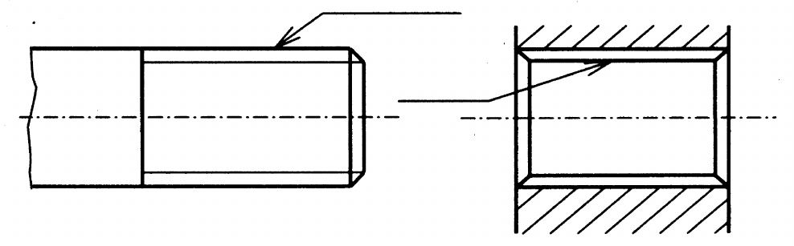
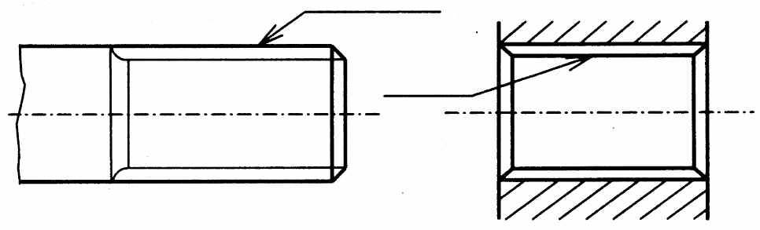

Příklad kreslení hřídele a náboje s rovnobokým drážkováním podle mezinárodní normy ISO:

Příklad kreslení hřídele a náboje s rovnobokým drážkováním podle ČSN:

Rozměry v milimetrech
| Šířka pera (drážky) b |
Malý průměr d |
Velký průměr D |
|||||
|---|---|---|---|---|---|---|---|
| Toleranční třídy pro drážkování v nábojích | |||||||
| netvrzených | tvrzených | netvrzených i tvrzených | tvrzených | netvrzených i tvrzených | |||
| D9 | F10 | D9 | H7 | H6 | H11 | ||
| Toleranční třídy pro drážkování na hřídelích | |||||||
| Středění na malý průměr | Náboj posuvný na hřídeli | d9, e8 f7, f8, f9 h8, h9, js7 |
d9, e8 f7, f8, f9 h8, h9 |
h8 | e8 f7, g6 |
g5 | |
| Náboj pevný na hřídeli | k7 | js7 k7 |
h6, h7 js6, js7 n6 |
js5 | a11 | ||
| Středění na boky drážek | d9, e8, f8 f9,h8,h9 js7, k7 |
d9, e8, f8 f9, h8, h9 |
|||||